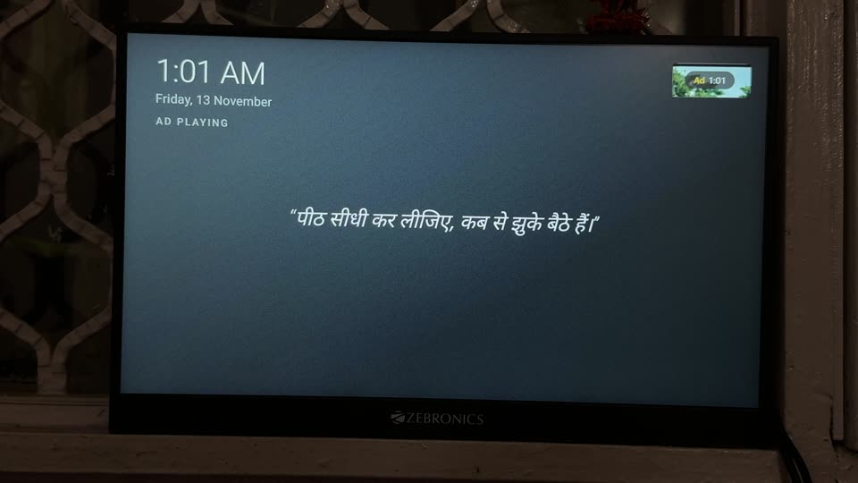

reels2real
Pritam's corner of the internet. Tinkering with TVs, phones and home tech, and telling the stories as comics.
Comics

Issue #1
The Ad Muter
Prime Video started showing ads. So Pritam and Claude built an Android TV app that mutes them and covers the screen with a clock and a joke.
Read the comic →